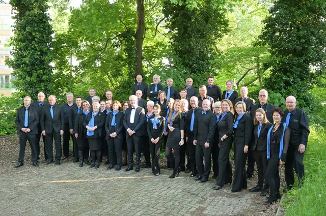
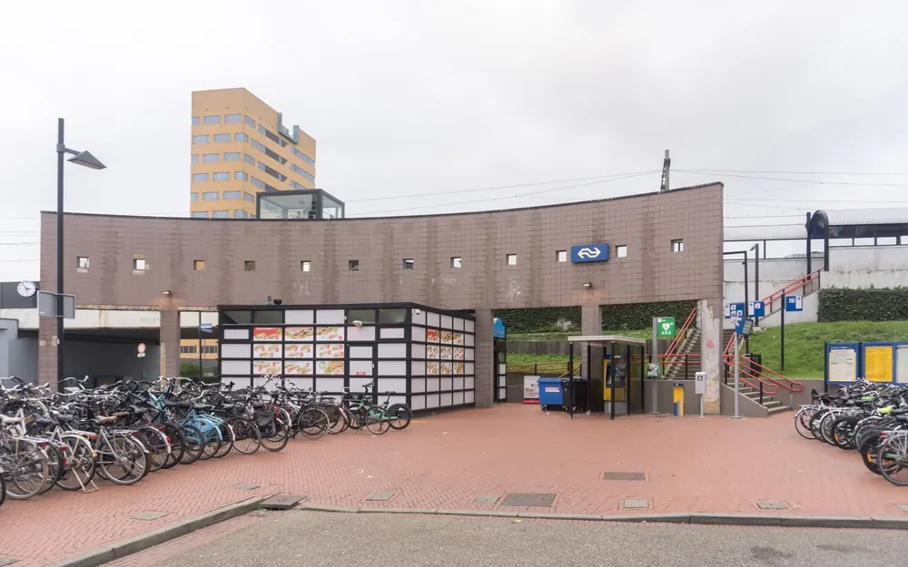
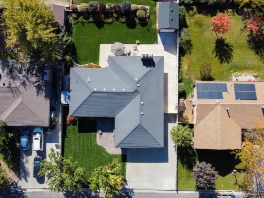

De wijken van Nijmegen
Nijmegen is een stad van buurten, elk met een eigen karakter: de statige straten van Oost, de nieuwbouw aan de overkant van de Waal en de groene wijken in het zuidwesten.
Wijken

Nijmegen-Oost
Alles over Nijmegen-Oost: de wijken van Bottendaal tot Hengstdal, de Romeinse keizerzuil, het Pegasusbeeld, de Koningstoren en wat er in de buurt is.
Lees meer
Lent in Nijmegen
Alles over Lent in Nijmegen-Noord: het eiland Veur-Lent en de Spiegelwaal, zwemmen en strand, de bruggen over de Waal, Fort Lent en hoe je er komt.
Lees meerBrakkenstein in Nijmegen
Alles over Brakkenstein in Nijmegen-Zuid: het oude landgoed, Klooster Brakkenstein en de kloostertuin, De Drie Huizen, sportclubs en de buurt.
Lees meer
Hatert in Nijmegen
Alles over Hatert in Nijmegen: van oud dorp tot woonwijk, Huis Hatert, Winkelhart Hatert, het Maas-Waalkanaal en wat er in de buurt te doen is.
Lees meerLindenholt in Nijmegen
Alles over Lindenholt in Nijmegen-West: De Kamp, 't Acker en 't Broek, hoe de wijk is gebouwd, winkelcentrum Leuvensbroek en wat er in de buurt is.
Lees meer
Dukenburg
Alles over Dukenburg in Nijmegen: de geschiedenis van de wijk, winkelcentrum en koopzondag, de Woonboulevard, Zwembad Dukenburg en het station.
Lees meerWonen in Nijmegen

Nijmegen: de oudste stad met de jongste energie
Waarom mensen naar Nijmegen verhuizen en er niet meer weg willen: studenten, cultuur, natuur en de sfeer van de oudste stad.
Lees meer
In deze wijken in Nijmegen vind je prachtige nieuwbouw
Een nieuwbouwwoning in Nijmegen? In deze wijken vind je de mooiste nieuwbouwprojecten, van Nijmegen-Noord en Lent tot Oost en Dukenburg.
Lees meer